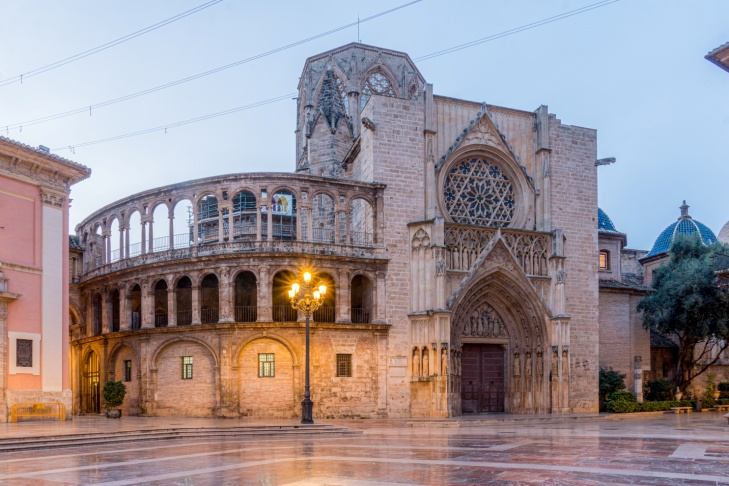
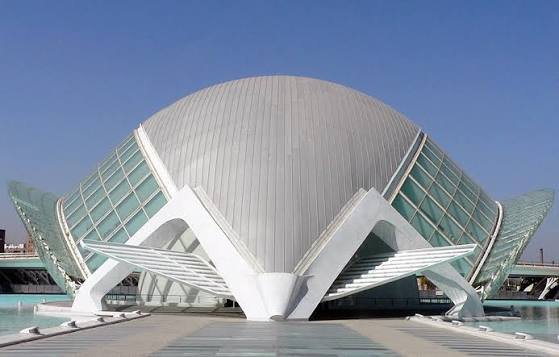
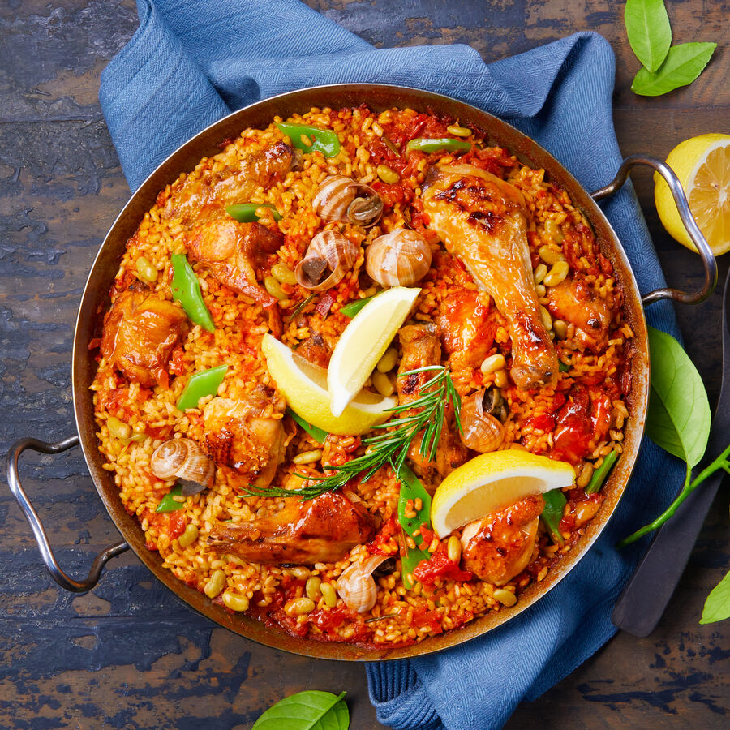
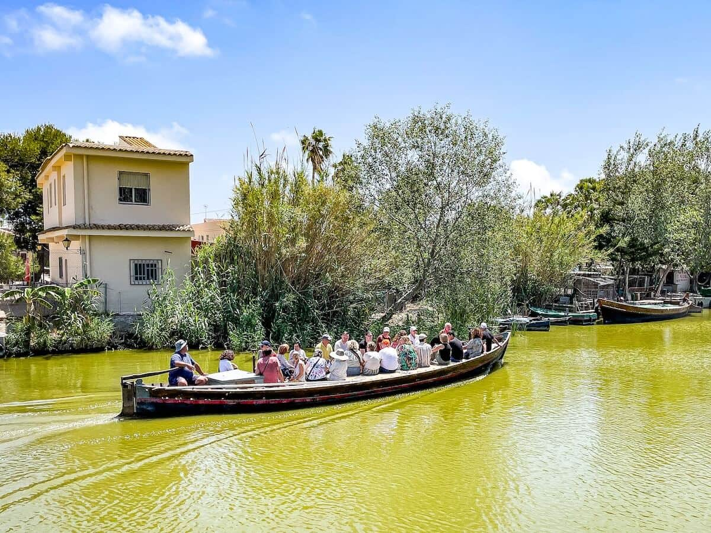
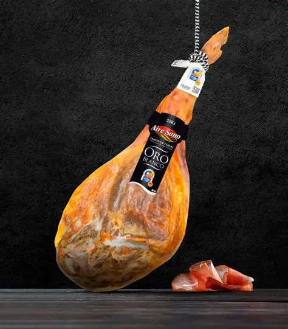
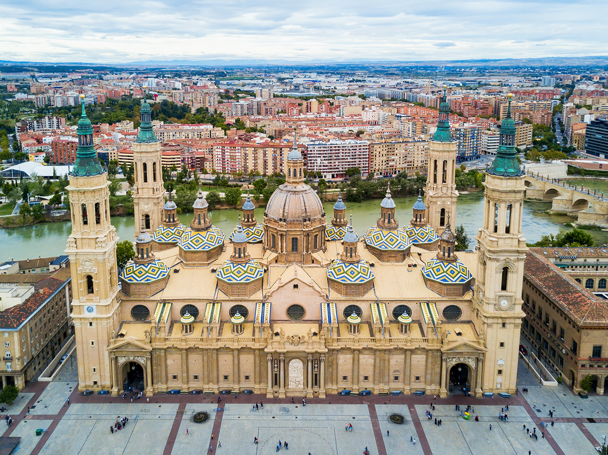
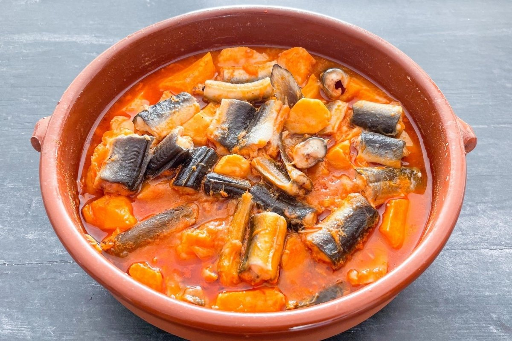
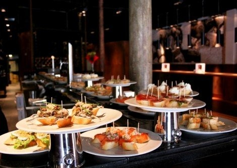
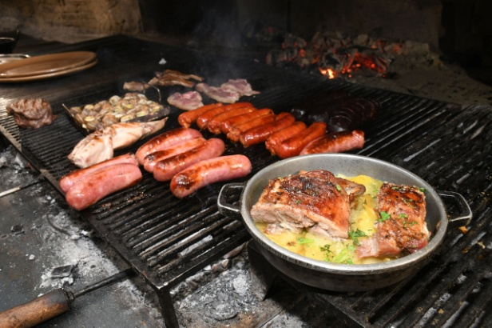

Escapade en petit groupe · 4 jours · Méditerranée espagnole
Valence · La cité de la lumière
Centre historique · Cité des Arts · Albufera · Paella valencienne
Demander un devis gratuitUne immersion lumineuse au cœur de la Méditerranée
Valence séduit par son énergie, son architecture futuriste, ses ruelles historiques et ses saveurs authentiques. Entre mer, lagunes, jardins et gastronomie, cette escapade vous plonge dans une Espagne vibrante, chaleureuse et profondément méditerranéenne. De la paella authentique d'El Palmar au Tribunal des Eaux millénaire, chaque instant raconte la Valence éternelle.
Le voyage en un coup d'œil

⛪ Cathédrale & Tribunal des Eaux
- Le Saint Graal, trésor unique en Europe
- Tribunal des Eaux (UNESCO, 960 ans d'histoire)
- Plaza de la Virgen & Plaza Redonda
- Lonja de la Seda (gothique civil UNESCO)

🏛️ Cité des Arts et des Sciences
- L'Hemisfèric, l'Umbracle, le Musée des Sciences
- L'Oceanogràfic, plus grand aquarium d'Europe
- Architecture futuriste de Santiago Calatrava
- Pont de l'Assut de l'Or

🥘 La vraie Paella valencienne
- Poulet, lapin, garrofó, riz bomba, safran
- Cuite au feu de bois d'oranger
- À El Palmar, village d'origine
- Tradition ancestrale valencienne

🌊 L'Albufera & El Palmar
- 24 km² de lagune, « miroir du soleil »
- 223 km² de rizières
- Balades en barque traditionnelle
- Barracas, maisons typiques

🍖 Calamocha · Jambon de Teruel
- Capitale du jambon AOP de Teruel
- Halte gastronomique J1
- Cuisine traditionnelle aragonaise
- Ambiance villageoise authentique

🏛️ Zaragoza · Trois héritages
- Romaine : Caesaraugusta
- Musulmane : Palais de l'Aljafería
- Chrétienne : Basilique del Pilar
- Déjeuner au musée-restaurant El Fuelle
L'Albufera, le miroir du soleil
24 km² de lagune, 223 km² de rizières, 1 mètre de profondeur. Un écosystème unique où naquit la paella valencienne.
Votre itinéraire jour par jour
Jour 1 · Calamocha · Capitale du jambon
Départ du Sud-Ouest
Route vers la Méditerranée à travers les paysages aragonais.
Calamocha · Jambon AOP de Teruel
Première halte gastronomique dans ce village réputé pour son jambon AOP. Ambiance locale, cuisine généreuse, immersion dans l'Espagne intérieure. Dégustation de jambon de Teruel, spécialité reconnue dans toute l'Espagne.
Arrivée à Valence
Installation à l'hôtel ou appartement dans le centre historique. Charme authentique, architecture élégante, accès immédiat aux monuments à pied. Première balade pour prendre le pouls de la ville.
Tapas & ambiance valencienne
Découverte des quartiers tapas : Ruzafa (branché & créatif), El Carmen (historique & authentique), Colón (élégance & modernité). Soirée de tapas dans l'ambiance vivante de Valence.
Jour 2 · Les incontournables du centre historique
Cathédrale & Saint Graal
Visite de la Cathédrale de Valence qui abrite le Saint Graal, trésor unique en Europe. Puis la Plaza Redonda, architecture circulaire remarquable, et la Lonja de la Seda, chef-d'œuvre du gothique civil classé UNESCO.
Marché Central
Le Temple de la gastronomie valencienne. Un des plus grands marchés d'Europe, architecture moderniste, produits frais, ambiance colorée. Déjeuner de tapas ou de produits du marché.
Tribunal des Eaux & Tours
Chaque jeudi à 12h, lorsque sonnent les cloches du Miguelete, se réunit l'un des plus anciens tribunaux d'Europe : le Tribunal des Eaux, 960 ans d'histoire, patrimoine UNESCO. Puis découverte des Tours de Quart et des Tours des Serranos, vestiges des remparts médiévaux.
Flamenco, lumière & tapas nocturnes
Soirée festive dans le quartier d'El Carmen ou sur la Plaza de la Virgen. Spectacle de flamenco ou tapas dans les bars à vin. La nuit valencienne s'anime.
Jour 3 · Cité des Arts & Albufera
La Cité des Arts et des Sciences
Chef-d'œuvre architectural de Santiago Calatrava : L'Hemisfèric (œil de Valence), l'Umbracle (jardin suspendu), le Musée des Sciences Prince Philippe et L'Oceanogràfic, plus grand aquarium d'Europe. Pont de l'Assut de l'Or reliant les deux rives du Turia.
El Palmar · La vraie Paella valencienne
Déjeuner à El Palmar, village où fut inventée la paella. La recette authentique : poulet, lapin, garrofó (haricot blanc), riz bomba, safran, cuite au feu de bois d'oranger. Accompagnée d'all i pebre (anguille, ail, paprika, pommes de terre), spécialité de l'Albufera.
Balade en barque sur l'Albufera
24 km² de lagune, « le miroir du soleil ». Balade traditionnelle en barque à fond plat entre les rizières. Découverte des barracas (maisons typiques) et de l'écosystème unique. Coucher de soleil sur l'Albufera, moment magique.
Plage de la Malvarrosa
Soirée sur la plage de la Malvarrosa, promenade sur le Paseo Marítimo, dîner de fruits de mer face à la Méditerranée.
Jour 4 · Zaragoza & retour
Route vers Zaragoza
Départ de Valence en direction de Zaragoza, capitale de l'Aragon.
Zaragoza · Trois héritages
Découverte des trois héritages majeurs de la ville : romain (Caesaraugusta), musulman (Palais de l'Aljafería, XIe siècle) et chrétien (Basilique del Pilar, baroque). Déjeuner au musée-restaurant El Fuelle.
Route du retour
Route du retour vers le Sud-Ouest avec les images de Valence en tête et le goût de la paella sur les lèvres.
La Cité des Arts au coucher du soleil
Quand la lumière dorée de Valence baigne l'architecture futuriste de Santiago Calatrava. Un spectacle à couper le souffle.
Gastronomie valencienne
🥘 Paella valencienne
Poulet, lapin, garrofó, riz bomba, safran. La recette authentique cuite au feu de bois d'oranger à El Palmar.

🐟 All i pebre
Anguille de l'Albufera, ail, paprika, pommes de terre. Spécialité traditionnelle des pêcheurs du lac.

🍷 Tapas & vins
Ruzafa, El Carmen, Colón : les quartiers tapas de Valence. Vins de la Communauté valencienne.

🔥 Grillades & fruits de mer
Sur la Malvarrosa : poissons, fruits de mer et grillades face à la Méditerranée.
L'esprit du voyage
🏛️ Patrimoine UNESCO
Lonja de la Seda · Tribunal des Eaux · Centre historique
🎨 Architecture futuriste
Cité des Arts · Calatrava · L'Hemisfèric · L'Oceanogràfic
🥘 Gastronomie
Paella authentique · All i pebre · Tapas · Fruits de mer
✨ La philosophie VPDVOYAGES
- Sélection : Des étapes qui ont du sens dans le rythme global
- Équilibre : Culture + gastronomie + nature + architecture
- Personnalisation : Le programme évolue selon vos envies
Valence, avec son mélange unique de patrimoine millénaire, d'architecture futuriste et de gastronomie méditerranéenne, promet une escapade lumineuse et authentique.
Votre itinéraire sur la carte
De Calamocha à Zaragoza, en passant par Valence et l'Albufera : cliquez sur chaque point doré pour découvrir les étapes de votre escapade.
Bon séjour à Valence !
Valence & La Albufera · Escapade méditerranéenne · 4 jours
Parlons de votre projet →